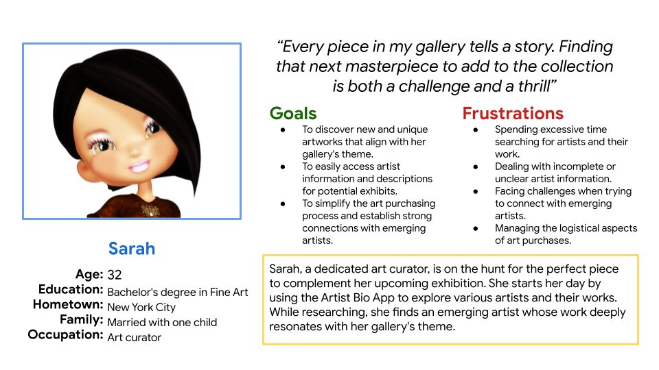
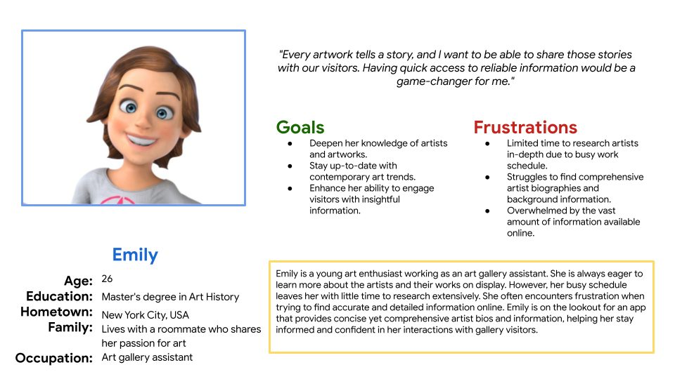
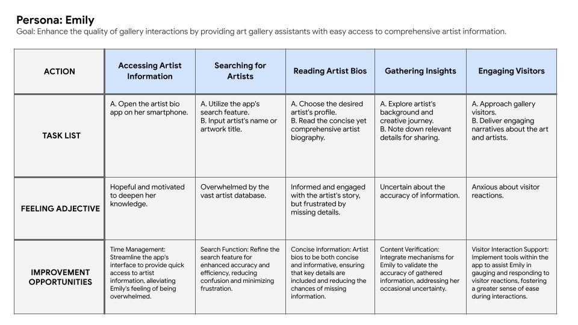
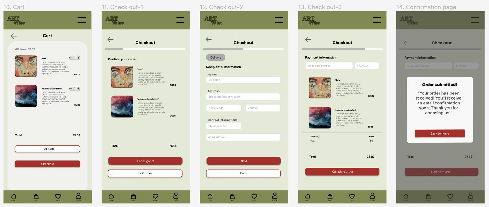
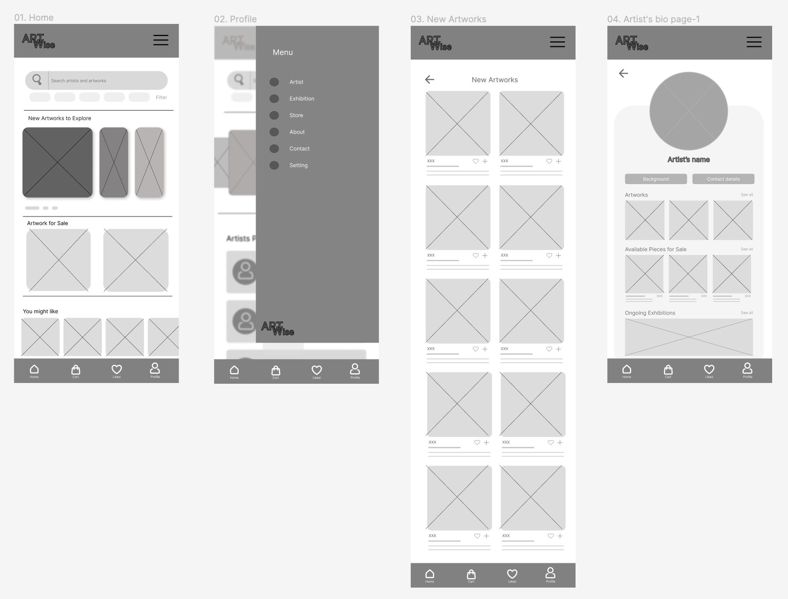
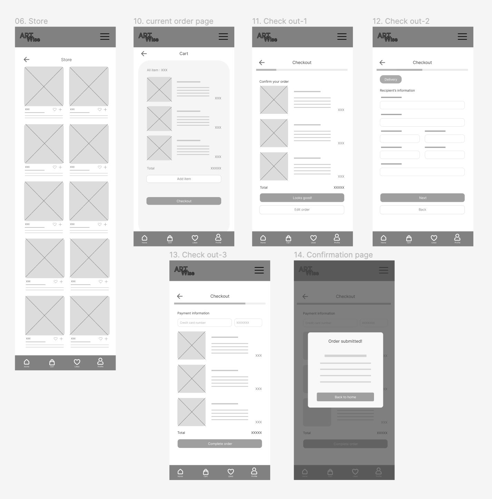
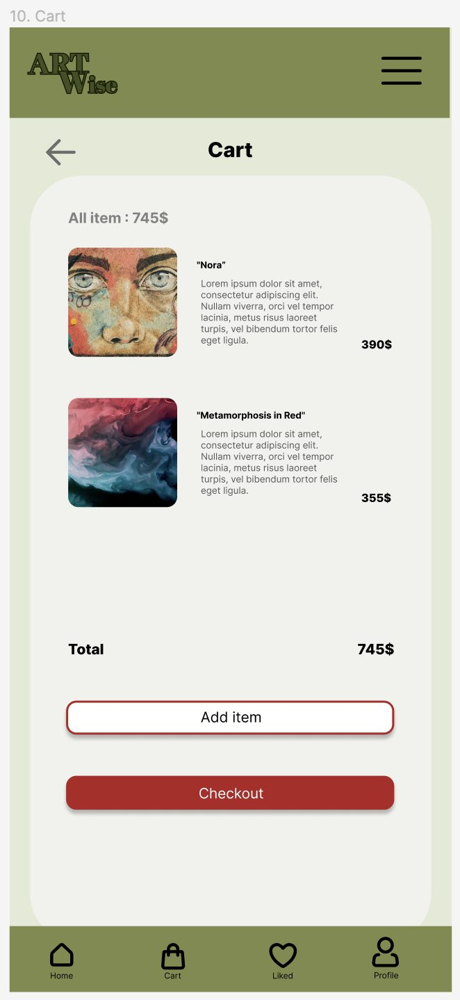
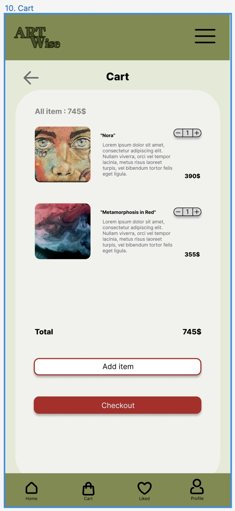

GOOGLE UX DESIGN CERTIFICATE · 2023—2024
ARTWise
A digital gallery experience exploring how art enthusiasts can discover artists and artworks through a clearer, more approachable browsing and purchasing journey.
01 · CHALLENGE
Making digital art discovery easier to navigate.
The project focused on the experience of finding artists and artworks online and moving through that discovery toward a possible purchase. The goal was to organize the experience so that browsing felt understandable rather than fragmented.
02 · PROCESS
Moving from user needs into an interactive experience.
I worked through the UX process from research and information structure into user flows, wireframes and interactive prototypes. Each stage helped translate the broader idea of an online gallery into concrete screens and interactions that could be evaluated and refined.




Explore the user problem and the needs around discovering art online.
Define the journey, information hierarchy and flows connecting discovery with artwork details.
Turn the structure into wireframes and interactive designs that make the experience tangible.


03 · LEARNING
A foundation for my later product-design work.


ARTWise strengthened my ability to connect research, information architecture and interface decisions in one end-to-end UX process. It also reinforced the value of prototyping as a way to evaluate an experience before investing in implementation.